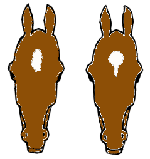

Website vergroten/verkleinen: cltr-knop + scrollen
Exterieur van het paard
| GRHOKAD |
|
Het signalement van een paard bestaat uit de volgende onderdelen: • G. - Geslacht (hengst, ruin, merrie) - stamboeknummer • R. - Ras - bloed/gebruikerstype (volbloed/warmbloed, koudbloed) • H. - Hoogte - pony, cob, middelmatig, groot • O. - Ouderdom • K. - haarKleed • A. - Aftekeningen • D. - Datum en handtekening |
terug naar boven
| Het exterieur van het paard: | |||||

|
|||||
|
Het exterieur van het paard: I. Voorhand (hoofd, hals, voorbeen) II. Middenhand (rug, borstkas, buik) III. Achterhand (bekken, achterbeen) |
|||||
HET EXTERIEUR LEREN: KLIK HIER! |
|||||
terug naar boven
| Schofthoogte | |
 stokmaat |
• de stokmaat is de afstand van het hoogste punt van de schoft, verticaal naar beneden, tot de bodem. Deze wordt gemeten met een uitschuifbare maatstok met bovenaan een uitklapbaar dwarsstaafje. Het paard moet vierkant staan zonder hoefijzers op een harde ondergrond en de stok wordt loodrecht neergezet met het dwarsstukje op het hoogste punt van de schoft. Op de schaalverdeling op de stok is nu de hoogte van het dier af te lezen. Bij een pony/paard met ijzers wordt één centimeter van de gemeten stokmaat afgetrokken. • de bandmaat van een paard is een meting met een band vanaf de onderkant van de hoef van het voorbeen tot de schoft, waarbij de achouderwelving wordt meegenomen waardoor deze maat altijd groter uitvalt dan de stokmaat. |
|
Wedstrijdsport: Minder dan 1,57 m.: pony. A-pony: tot 1,17 m. B-pony: 1,17 tot 1,27 m. C-pony: 1,27 tot 1,37 m. D-pony: 1,37 tot 1,48 m. E-pony/klein paard: 1,48 t/m 1,569 m. In het buitenland is de D-pony de grootste pony. Als een dier gelijk of groter is dan 1.48,1 meter is het internationaal gezien officieel een paard; de E maat geldt alleen in Nederland, bij de rijpony's. Dat wil dus zeggen dat je met een E pony niet mee kunt doen aan internationale ponywedstrijden.In Duitsland bijvoorbeeld mogen E-pony's (Kleinpferde) in de hogere sport zoals Lichte Tour mee rijden. Ras De indeling die op wedstrijden wordt aangehouden is ongeacht het ras. Er zijn bepaalde rassen waarbij men zelf liever spreekt over paarden dan over pony's, ook als de stokmaat beneden de grens voor de paarden ligt. Uitzonderingen zijn b.v. de IJslander, het Fjordenpaard en de Falabella, dat zijn paarden, ongeacht de schofthoogte. Keuringen Een stamboek geeft vaak een maximale en/of minimale stokmaat aan waaraan het te keuren paard/pony moet voldoen. |
|
terug naar boven
| De hoef | ||

|
De hoef is te vergelijken met onze middeltste vinger of teennagel. Het paard loopt als het ware op het puntje van zijn (uitgegroeide) vinger of teen. A: Spronggewricht B: Kniegewricht |
|

|
A. Kroonrand B. Zoom C. Hoornwand D. Verzenen E. Verzenenwand F. Kwartier G. Toon H. Hoornige ballen |
|

|
1. Draagrand 2. Witte lijn 3. Hoornzool 4. Straal 5. Zijdelingse straalgroeven 6. Middelste straalgroeven 7. Hoornige steunsels 8. Hoornige ballen 9. Verzenen |
|

|
Kleuren van de hoef. Het witte hoorn is vaak zachter dan het donkere hoorn. |
|
terug naar boven
| De vachtkleur van het paard: | ||
|
1.De basiskleuren Vos Bruin Zwart 2. Verdunningskleuren 2.1 Creme 2.2 Wildkleur 2.3 Wildkleur (Fjord) 2.4 Silver 2.5 Champagne Andere kleurfactoren 3.1 Schimmel Witpatronen 4.1 Platenbont (Tobiano) 4.2 Roan 4.3 Appaloosa Zie voor meer informatie over de kleuren: Website: http://www.bokt.nl/wiki/Kleurfotos |
||
 vos |
 bruin |
 zwart |
 palomino |
 valk |
 smokey-black |
 schimmel |
 platenbont vos |
 appaloosa |
terug naar boven
| De aftekening van de benen | ||

|
1: Witte kroonrand 2: Sokje 3: Sok 4: Witvoet 5: Half witbeen 6: Witbeen 7: Hoog witbeen 8: Witte kroonrand, achter hoog oplopend 9: Sok, achter hoog oplopend (tot over de kogel) 10: Sok voor en achter oplopend 11: Witvoet voor oplopend 12: Witvoet oplopend tot halverwege de pijp 13: Half witbeen voor oplopend (tot aan de voorknie) |
|
terug naar boven
| Aftekening van het hoofd van het paard: | |
 |
De aftekening op het voorhoofd worden een kol genoemd. • enkele witte haren op het voorhoofd: kol |
|
 |
• langwerpige kol: druipkol |
 |
Een aftekening op de neusrug wordt bles genoemd. • bles • onregelmatige bles • brede bles |
 |
Een bles kan indringen in een van de neusgaten of deze omvatten. • bles om het linker neusgat • bles om beide neusgaten • melkmuil |
 |
Op de neustop en onderlip kunnen aftekeningen voorkomen. • sneb |
terug naar boven
| Diversen | |||
 |
Zwilwratten De ruwe huiddelen aan de binnenkant vlak boven de knie zijn normaal: deze zwilwratten zijn, volgens sommige wetenschappers, de rudimentaire resten van een koot. Ze bevinden zich ook op de achterbenen vlak onder de hak. Zwilwratten variëren in vorm en kleur, gelijk een vingerafdruk. De zwilwrat groeit en wordt soms ingekort (is pijnloos) door ze laagje voor laagje af te schrappen, doch probeer ze niet te verwijderen. Het gaat makkelijker als je ze voorweekt met b.v. baby-olie. Al te lange zwilwratten kunnen ergens achter blijven haken waardoor ze losscheuren wat lelijke wonden kan veroorzaken (behandelen met betadine). Bij sommige paarden valt er spontaan af en toe een gedeelte af. Er zijn rassen zonder zwilwrat aan de achterbenen. |
||

|
Spoor Achter op de kogel vinden we de z.g. vetlok waarin een hoornig huidgedeelte, de spoor, is gelegen. De spoor wordt soms ingekort (is pijnloos) door ze laagje voor laagje af te schrappen, doch probeer ze niet te verwijderen. Het gaat makkelijker als je ze voorweekt met b.v. baby-olie. |
||
 |
Behang Vooral bij de lager in het bloed staande paarden, kan de lange beharing van het onderbeen tot en met de onderarm oplopen. Deze beharing noemen we het "behang". Veel paardenrassen hebben meer of minder behang. Des te meer Volbloed- invloed des te minder behang. |
||
 |
De aalstreep Streep van afwijkende (vooral donkere) kleur die door de manen in het midden en over de gehele rug van kop tot staart loopt. |
||

|
Gezoomd Vertoont de grens van de aftekening tussen gepigmenteerd en wit haar een band van gemengd haar, dan is de aftekening gezoomd. |
||
 met centrum |
Haarwervel (aren, kruinen) • met centrum convergerend divergerend • veervormig kringstreepwervel streepwervel • ruitvormig Je ziet haarwervels vaak op plaatsen waar de inplantingsrichting van de haren verandert, zoals op het voorhoofd, in de halsstreek (onder de manen), aan de voorborst, de oksel, de heupen, de flanken en de liesplooi. Buiten de normale plaats kunnen ze ook voorkomen op de neus, achter de oren, op de hals en op de borst. Haarwervels draaien naar rechts of naar links. Haarwervels zijn uniek op ieder paard. Het zijn gevoelige plekken voor zomerexceem. |
 veervormig |
|
  |
Appeltjes in de vacht Dit is een patroon in de vacht wat bij sommige paarden blijvend te zien is zoals een appelschimmel en bij anderen alleen in de zomer. Bij de laatste wordt het vaak als een teken van gezondheid gezien maar er wordt ook beweerd dat het paard dan in de rui is wat ringsgewijs gaat, de lichter stukjes die je ziet is de echte dunne zomervacht en verkleurd door de zon. De donker stukken zijn de wat langere haren die nog niet verkleurd zijn. Wanneer de vacht vettig is, zijn de appeltjes beter te zien. |
||
 |
Glasoog Een extreem lichtgekleurd oog vanwege het ontbreken van pigment in de iris van het oog. |
||
 |
Lanssteek of Prophets Thumb De lanssteek is een plaatselijke spierverscheuring welke na de genezing een scherpe indeuking geeft. De Prophets Thumb in de nek schijnt echter vanaf de geboorte aanwezig te zijn en wordt soms verklaard door het fijt dat waarschijnlijk voor de geboorte een hoef in de nek gedrukt heeft. Een wijdversprijd verhaal vertelt dat paarden met een dergelijk teken in de nek afstammen van een lijn van paarden die aan Mohammed toebehoord hebben. |
||
|
De vijf merries van Mohammed door Ilil Arble, PH.D De hete woestijnwind blies tegen de tent, joeg de het stof naar binnen. Fatima liep zachtjes naar binnen, en droeg een kan van aardewerk gevuld met koud water, en overhandigde dit aan de Profeet. "Alsltublieft, stop jezelf te kwellen, Mohammed", zei ze, "drink wat water!" "Ik zal drinken als de test voorbij is en de de paarden ook kunnen drinken. Ik kan niet drinken terwijl ik weet dat zij dorst hebben" , zei de Profeet tegen zijn dochter. "Ik begrijp deze test niet, en ik vind het ook niet leuk", zei Fatima boos. "De paarden drie volle dagen van drinken weerhouden is wreed. Ik kan niet geloven dat je dat zou doen, een man die meer van z'n paarden houdt dan van zichzelf!" "Ik moet. Allah heeft het me geboden -- zou je willen dat ik ongehoorzaam ben aan God?" De verspreiding van de Islam hangt voor een groot gedeelte af van de loyaliteit en de kracht van onze paarden. De beste van deze paarden, zei Allah, zullen worden geëerd tot het einde der tijden ... Maar het is nu de avond van derde dag, dus laten we naar de paarden gaan en de test uitvoeren." Hij nam een hoorn die aan de ingang van de tent hing, en liep naar een omheining waar ongeveer honderd paarden werden gehouden, op een kleine afstand van de waterplaats van de oase. De paarden keken verwachtingsvol naar hun geliefde meester terwijl hij snel het hek opende. Gekweld door de dorst galoppeerden de paarden naar de waterplaats, maar voordat zij dat konden bereiken, bracht Mohammed de hoorn naar zijn lippen en blies de roep voor de oorlog. De paarden negeerden het. Ze hadden zoveel dorst dat zij het waarschijnlijk niet eens konden horen, en galoppeerden verder naar het water. Maar niet allemaal: Vijf merries stopten. Zonder aarzeling draaiden zij zich om en kwamen terug naar Mohammed, klaar om te doen wat er ook van hen verwacht werd. De Profeet aaiden hun zachte manen, tranen in zijn ogen. Hij leidde hen naar het water en visualiseerde de glorieuse toekomst terwijl zij dronken. Hij wist dat deze merries de beste Arabische veulens ter wereld zouden brengen, de enige paarden met puur bloed , de paarden die hem zouden helpen de Islam in elke uithoek van de wereld te brengen. Dus ja, het zijn speciale paarden! (Deze vijf merries hadden dus het kenmerk van een Prophets Thumb) |
|||
terug naar boven
| Beoordeling exterieur | ||||
 te dik  te dun |
Te dik paard Bij een te dik paard is het moeilijk om de ribben te voelen, de rug wordt vlak, rond de staartwortel is het te zacht van het vet, plek rondom de schouder is gevuld met vet, waarneembare dikke nek. Te dun paard de structuur van de botten is duidelijk waarneembaar, vooral de ribben en de heupbotten. Voor de voedingstoestand van je paard kun je een score berekenen. Zie hier! |
|||

|
overbouwd Het hoogste punt van het kruis is hoger dan het hoogste punt van de schoft. |
|||

|
• vierkantsmodel: de lengte van het paard (boeg-zitbeenknobbel) is gelijk aan de schofthoogte • rechthoeksmodel: de lengte is groter/langer dan de schofthoogte. |

|
||
 |
• edel hoofd • ramshood |
 |
||
 lichte hoofd-hals verbinding |
Hoofd-hals verbinding Er wordt bij dit kenmerk gekeken naar twee kenmerken, te weten de lengte van de nek en de keeluitsnijding. • Licht: een lange nek, lichte keeluitsnijding en een kleine afstand tussen bovenkant nek en onderkant keel. • Zwaar: een korte nek, zware keeluitsnijding en een grotere afstand tussen bovenkant nek en onderkant keel. |
 zware hoofd-halsverbinding |
||
 lange hals |
Halslengte De lengte van de as tussen een punt halverwege de hoofd-halsverbinding en het midden van de voorkant van de schouder (gerelateerd aan andere lichaamsmaten van hetzelfde paard). |
 korte hals |
||
 zware halsbespiering |
Halsbespiering De mate van bespiering van de hals, waarbij de nadruk ligt op de bovenlijn. Zwaar: een bovenlijn die een lichte opwaartse welving laat zien en daarbij goed is opgevuld. |
 lichte-halsbespiering |
||
 hoge schoft |
Hoogte van de schoft De hoogte van de schoft gemeten als afstand tussen de horizontale lijn door het hoogste punt van de schoft en de horizontale lijn door het laagste punt van de schoft. |
 lage schoft |
||
 schuine schouder |
Schouderligging De hoek die het schouderblad maakt met de horizontale lijn. |
 steile schouder |
||
 strakke rug |
Verloop van de rug Het verloop van de bovenlijn van schoft tot lendenen. |
 weke rug |
||
 strakke lendenen |
Verloop van de lendenen Het verloop van de bovenlijn van rug tot kruis. |
 weke lendenen |
||
 recht kruis |
Het kruis Het verloop van de lijn van de heup naar het zitbeen. |
 hellend kruis |
||
 weke kootstand |
Kootstand Wordt door middel van de hoek met de horizontale lijn bepaald. Normale kootstand is 45° met de grond/horizontale lijn. |
 steile kootstand |
||
terug naar boven
| Dressuuroefeningen in zakformaat | |

|
Wil je verschillende dressuuroefeningen in een handig boekje? Een leuk geschenk voor jezelf, je vriend(in) of familielid. Lees meer ............ |
| Springoefeningen in zakformaat | |

|
Wil je verschillende springoefeningen en enkele parcoursschetsen in een handig boekje? Een leuk geschenk voor jezelf, je vriend(in) of familielid. Lees meer ............ |
terug naar boven